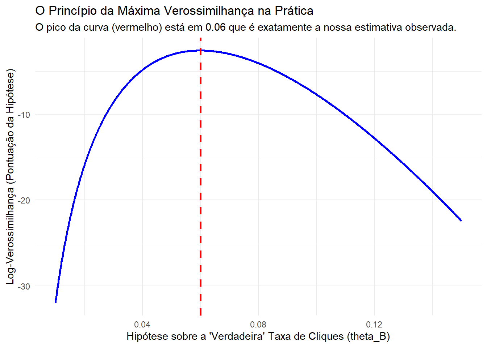

Imagine que você é um Cientista de Dados em uma empresa de e-commerce. O time de design propõe um novo botão de “Comprar” (Versão B), com uma cor diferente, alegando que ele aumentará a taxa de cliques em relação ao botão atual (Versão A).
Para validar essa hipótese, você implementa um teste A/B: 500 usuários aleatórios veem a Versão A, e outros 500 veem a Versão B. Ao final do experimento, você observa os resultados:
Versão A (Controle): 25 cliques em 500 visualizações (taxa de 5%).
Versão B (Tratamento): 30 cliques em 500 visualizações (taxa de 6%).
A Versão B parece melhor. Mas a pergunta central que define a sua carreira como cientista é: essa diferença de 1% é real e significativa, ou pode ser apenas fruto do acaso? Se mostrarmos os botões para outros 500 usuários, talvez os resultados se invertam.
Para responder a essa pergunta com confiança, precisamos de um framework rigoroso para “aprender” sobre a realidade a partir de dados limitados e ruidosos. Esta aula irá construir esse framework, peça por peça, usando a inferência estatística.
2.1 O Framework da Inferência: Do Problema à Modelagem
O primeiro passo é traduzir nosso problema prático para uma linguagem matemática formal.
Dados (observações): Os dados são valores observados de variáveis aleatórias que seguem uma distribuição de probabilidade conjunta P, que pertence a uma classe (conhecida) \(\mathcal{P}\). Frequentemente, \(\mathcal{P}\) é indexada por um parâmetro \(\theta \in \Theta\). \[ \mathcal{P} = \{ P_{\theta}, \theta \in \Theta \} \]
Objetivo: fazer inferência sobre \(\theta\) ou \(g(\theta)\) com base nos dados observados.
estimação pontual ou intervalar
teste de hipóteses
Perspectiva de Data Science:
Parâmetro (\(\theta\)): A Verdade Oculta.\(\theta\) é a verdadeira, mas desconhecida, taxa de cliques de um botão se pudéssemos mostrá-lo a um número infinito de usuários. É a realidade que queremos descobrir. No nosso caso, temos dois parâmetros de interesse: \(\theta_A\) e \(\theta_B\).
Modelo (\(\mathcal{P}\)): Nossa Hipótese sobre o Mundo.\(\mathcal{P}\) é a nossa escolha de modelagem. Ao rodar o teste A/B, assumimos que a decisão de cada usuário de clicar (ou não) é um evento independente, como um “cara ou coroa” com uma moeda viciada. Esse processo é descrito pela distribuição de Bernoulli. Portanto, nosso modelo para a Versão B é a família de todas as distribuições de Bernoulli, \(\mathcal{P} = \{ \text{Bernoulli}(\theta_B), \theta_B \in [0, 1] \}\).
2.2 Estimação Pontual: O Melhor Chute a partir dos Dados
Nosso primeiro objetivo é usar os dados para dar um “chute” único e bem fundamentado sobre o valor do nosso parâmetro \(\theta\).
Ingredientes:
Uma função real g, definida no espaço paramétrico \(\Theta\), cujo valor \(g(\theta)\) é o que gostaríamos de obter informação / estimar. \(g(\theta)\): estimando.
Um vetor aleatório \(\underline{X}\) (observável) tomando valores no espaço amostral \(\mathcal{X}\), de acordo com uma distribuição \(P_{\theta} \in \mathcal{P}\). O valor observado de \(\underline{X}\), \(\underline{x}\) é o conjunto de dados. Muitas vezes, nos referimos a \(\underline{X} = (X_1, ..., X_n)\) como amostra.
Ideia: especificar um valor plausível para \(g(\theta)\).
Definição 2.1 (Estatística e Estimador) Qualquer função da amostra \(\underline{X}\) que não depende de quantidades desconhecidas é uma estatística. Uma estatística usada para estimar \(g(\theta)\) é chamada de estimador.
Valor observado do estimador, isto é \(\delta(\underline{x})\), é chamado de estimativa.
Perspectiva de Data Science:
Amostra (\(\underline{X}\)): A Evidência Coletada. Para o botão B, nossa amostra é um vetor de 500 elementos, \(\underline{X} = (X_1, ..., X_{500})\), onde \(X_i=1\) se o i-ésimo usuário clicou, e \(X_i=0\) caso contrário.
Estimador (\(\hat{\theta}\)): Nosso Algoritmo de Aprendizagem. O estimador é a receita ou algoritmo que transforma os dados brutos em um chute para \(\theta\). A receita mais intuitiva para estimar a taxa de cliques é simplesmente calcular a média da amostra: \(\hat{\theta}_B = \bar{X}_n = \frac{1}{n}\sum X_i\).
Estimativa: A estimativa é o número que nosso algoritmo produz: \(\hat{\theta}_B(\underline{x}) = 30/500 = 0.06\).
Exemplo 2.1 (Tempo de Vida de Lâmpadas) Seja X = tempo de vida de lâmpadas de certa marca. Assuma que \(X \sim \text{exp}(\theta)\), \(\theta > 0\). Suponha que \((X_1, ..., X_n)\) é uma a.a. de X.
Aqui, temos que \(\mathcal{P} = \{f_{\theta}, \theta > 0\}\), com \(f_{\theta}(x) = \theta e^{-\theta x} \mathbb{I}_{(0, \infty)}(x)\).
Exemplos de estatísticas:
\(S_n = X_1 + ... + X_n\) (tempo total de vida)
\(X_{(1)} = \min\{X_1, ..., X_n\}\) (menor tempo de vida)
\(\bar{X}_n = \frac{1}{n} \sum_{i=1}^{n} X_i\) (média amostral dos tempos de vida)
2.3 O Motor da Inferência: A Função de Verossimilhança
Temos um algoritmo intuitivo para estimar \(\theta\) (a média amostral), mas como podemos justificar que ele é um bom algoritmo? E se houvesse outros? A resposta está em um dos conceitos mais importantes da estatística e do Machine Learning: a verossimilhança.
A verossimilhança responde à seguinte pergunta: “Dado os dados que observei, qual valor do parâmetro \(\theta\) torna minhas observações mais prováveis (ou menos surpreendentes)?”
Ela funciona como uma função de pontuação (score) para diferentes hipóteses sobre a “verdade” \(\theta\).
Definição 2.2 (Função de Verossimilhança) A função de verossimilhança de \(\theta \in \Theta\), com base na amostra observada \(\underline{x} = (x_1, ..., x_n)\), é dada por \[ L(\theta) = L(\theta; \underline{x}) = f_{X_1, ..., X_n}(x_1, ..., x_n; \theta), \quad \theta \in \Theta \]
Nota: se \(\underline{X}\) é uma a.a. de X, então \(L(\theta) = \prod_{i=1}^{n} f_X(x_i; \theta)\) (i.i.d.’s)
Exemplo 2.2 (Funções de Verossimilhança) Obtenha a função de verossimilhança em cada caso assumindo uma a.a. \(\underline{X} = (X_1, ..., X_n)\) de X.
a) \(X \sim \text{Bernoulli}(\theta)\)\[ L(\theta) = \prod_{i=1}^{n} \theta^{x_i} (1-\theta)^{1-x_i} = \theta^{\sum_{i=1}^{n} x_i} (1-\theta)^{n - \sum_{i=1}^{n} x_i}, \quad \theta \in (0,1). \]\(\rightarrow L(\theta)\) depende da realização de \(T = \sum_{i=1}^{n} X_i\).
Conexão com o Teste A/B: Esta é exatamente a função de verossimilhança para o nosso problema! Para o botão B, observamos \(\sum x_i = 30\) e \(n=500\). A função se torna \(L(\theta_B) = \theta_B^{30}(1-\theta_B)^{470}\). Agora podemos “testar” diferentes valores de \(\theta_B\) e ver qual deles maximiza essa função. O valor que a maximiza é, de fato, \(30/500 = 0.06\), justificando nosso estimador intuitivo. Este é o Princípio da Máxima Verossimilhança.
b) \(X \sim \text{Poisson}(\theta)\)\[ L(\theta) = \prod_{i=1}^{n} \frac{e^{-\theta} \theta^{x_i}}{x_i!} = \frac{e^{-n\theta} \theta^{\sum_{i=1}^{n} x_i}}{\prod_{i=1}^{n} x_i!}, \quad \theta > 0. \]\(\rightarrow L(\theta)\) depende da realização de \(T = \sum_{i=1}^{n} X_i\).
c) \(X \sim U(0, \theta)\), \(\theta > 0\)\[ L(\theta) = \prod_{i=1}^{n} f_{\theta}(x_i) = \prod_{i=1}^{n} \frac{1}{\theta} \mathbb{I}_{(0, \theta)}(x_i) = \frac{1}{\theta^n} \prod_{i=1}^{n} \mathbb{I}_{(0, \theta)}(x_i) \] A indicadora \(\prod_{i=1}^{n} \mathbb{I}_{(0, \theta)}(x_i) = 1\) se, e somente se, \(0 < x_i < \theta\) para todo \(i=1, ..., n\), o que é equivalente a \(0 < x_{(1)} \le ... \le x_{(n)} < \theta\). Então, \[ L(\theta) = \frac{1}{\theta^n} \mathbb{I}_{(x_{(n)}, \infty)}(\theta), \quad \theta > 0 \]\(\rightarrow L(\theta)\) envolve a realização de \(T = X_{(n)}\).
Conexão com Aprendizagem Estatística: O processo de “treinar” um modelo de Aprendizagem Estatística (como uma Regressão Logística ou mesmo uma rede neural para classificação) é, em sua essência, um processo de otimização para encontrar os parâmetros do modelo (\(\theta\)) que maximizam a função de verossimilhança (ou a log-verossimilhança) para os dados de treinamento. O framework que construímos aqui é a base teórica para a maior parte do aprendizado de máquina supervisionado.
2.4 Implementação Prática em R
Na aula, afirmamos que a nossa estimativa intuitiva para a taxa de cliques (6%) era justificada pelo Princípio da Máxima Verossimilhança. Ou seja, de todas as “verdades” possíveis (\(\theta_B\)), o valor \(0.06\) é o que torna os dados que realmente observamos (\(k=30\) cliques em \(n=500\) tentativas) os mais prováveis.
Vamos provar isso visualmente. Em vez de usar cálculo para encontrar o máximo da função, vamos simplesmente “testar” milhares de valores de \(\theta_B\) e plotar a pontuação de verossimilhança que cada um recebe.
2.4.1 1. O Problema e a Função
Conforme o Exemplo (a), a função de verossimilhança para um processo Bernoulli é:
\[L(\theta) = \theta^{k} (1-\theta)^{n - k}\]
Onde: * \(n = 500\) (visualizações da Versão B) * \(k = 30\) (cliques na Versão B)
Nota Importante:\(L(\theta)\) é um número absurdamente pequeno (ex: \(0.06^{30} \times (1-0.06)^{470}\)). Computadores têm dificuldade com números tão próximos de zero. Por isso, na prática, nós sempre trabalhamos com a Log-Verossimilhança (ou “log-likelihood”).
Encontrar o \(\theta\) que maximiza \(L(\theta)\) é o mesmo que encontrar o \(\theta\) que maximiza \(\ell(\theta)\), mas os números são muito mais estáveis.
2.4.2 2. Implementação em R
Não precisamos implementar essa função manualmente. O R já a possui: é a função de densidade da distribuição Binomial, dbinom(). Pedindo o logarítmico dela (log = TRUE), obtemos exatamente a log-verossimilhança.
Vamos: 1. Definir nossos dados observados. 2. Criar um “grid” de hipóteses para \(\theta_B\) (ex: de 0.01 a 0.15). 3. Calcular a log-verossimilhança para cada hipótese. 4. Plotar e encontrar o pico.
library(ggplot2) # Para criar os gráficos# 1. Nossos dados observados para a Versão Bn_B <-500cliques_B <-30estimativa_observada <- cliques_B / n_B# 2. Criar um "grid" de hipóteses para a verdadeira taxa de cliques (theta_B)# Vamos testar 1000 valores possíveis entre 1% e 15%hipoteses_theta <-seq(from =0.01, to =0.15, by =0.0001)# 3. Calcular a log-verossimilhança para cada hipótese# Usamos dbinom() para calcular a "pontuação" de cada hipótese,# dado que observamos 'cliques_B' em 'n_B' tentativas.# log = TRUE nos dá a log-verossimilhança.log_like <-dbinom(x = cliques_B, size = n_B, prob = hipoteses_theta, log =TRUE)# 4. Preparar os dados para plotardf_like <-data.frame(theta = hipoteses_theta,log_likelihood = log_like)# 5. Encontrar o valor de theta que maximiza a log-verossimilhançatheta_max <- hipoteses_theta[which.max(log_like)]print(paste("Estimativa Observada (nosso 'chute'):", estimativa_observada))
[1] "Estimativa Observada (nosso 'chute'): 0.06"
print(paste("Estimativa de Máxima Verossimilhança (pico do gráfico):", theta_max))
[1] "Estimativa de Máxima Verossimilhança (pico do gráfico): 0.06"
# 6. Plotar!ggplot(df_like, aes(x = theta, y = log_likelihood)) +geom_line(color ="blue", size =1) +# Adiciona uma linha vertical no pico encontradogeom_vline(xintercept = theta_max, color ="red", linetype ="dashed", size =1) +labs(title ="O Princípio da Máxima Verossimilhança na Prática",subtitle =paste("O pico da curva (vermelho) está em", round(theta_max, 2), "que é exatamente a nossa estimativa observada."),x ="Hipótese sobre a 'Verdadeira' Taxa de Cliques (theta_B)",y ="Log-Verossimilhança (Pontuação da Hipótese)" ) +theme_minimal()

Como o gráfico demonstra, a função de log-verossimilhança atinge seu valor máximo exatamente em \(\theta = 0.06\).
Isso confirma nossa intuição: o “melhor chute” para a realidade desconhecida (\(\theta_B\)) é, de fato, a média que observamos nos nossos dados. O que fizemos aqui foi validar nosso estimador intuitivo \(\hat{\theta} = \bar{X}_n\) usando o rigoroso framework da Máxima Verossimilhança.